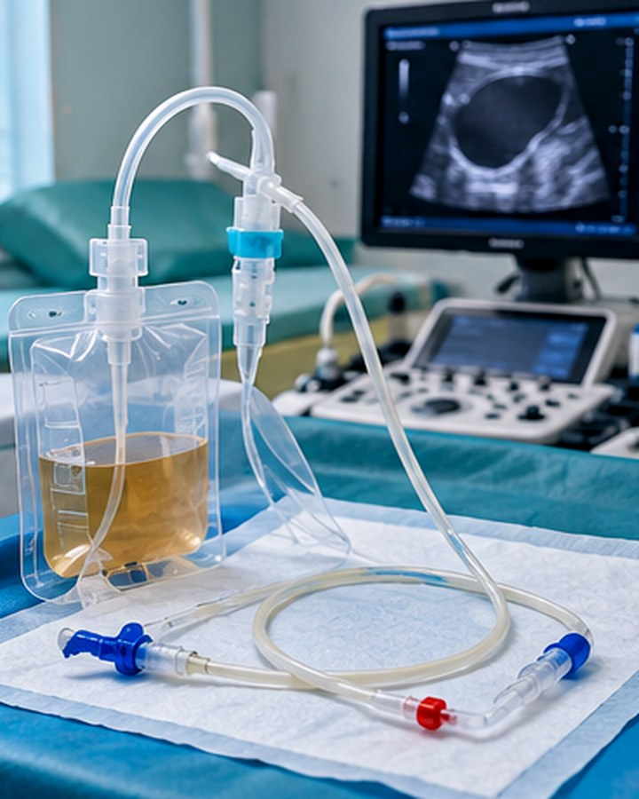

تركيب القساطر العلاجية · 45 من 46
تبديل ومتابعة القساطر تحت السونار
تعرف على دواعي تبديل ومتابعة القساطر تحت السونار، والتحضير المناسب، وخطوات الإجراء، والنتائج المتوقعة والتنبيهات الطبية.

تركيب القساطر العلاجية · 45 من 46
تعرف على دواعي تبديل ومتابعة القساطر تحت السونار، والتحضير المناسب، وخطوات الإجراء، والنتائج المتوقعة والتنبيهات الطبية.

القسطرة العلاجية أنبوب رفيع يوضع في حالات مختارة داخل تجمع سائل لتصريفه ومراقبته. قد يساعد السونار على اختيار مسار أكثر أمانًا، لكن نوع القسطرة ومدة بقائها يعتمدان على التشخيص.
لمراقبة موضع قسطرة موجودة أو تعديلها أو استبدالها إذا تعطل التصريف أو تغير الوضع حسب تشخيص الطبيب.
أحضر بيانات القسطرة وموعد تركيبها ونوعها، وأبلغ عن أي انسداد أو حمى أو تسرب خلال الأيام الأخيرة.
يفحص الطبيب مكان القسطرة والتجمع المحيط بالسونار، ثم يقرر إن كانت تحتاج إلى تثبيت أو تغيير أو إزالة.
يمكن التأكد من وضع الأنبوب نسبيًا وتقييم السائل المتبقي؛ بعض المشاكل تحتاج تصويرًا إضافيًا.
تُعطى تعليمات جديدة للضماد والتصريف وتحديد مراجعة لاحقة بحسب النتيجة.
تركيب القسطرة إجراء تدخلي قد يرتبط بالنزف أو العدوى أو إصابة بنى مجاورة أو انسداد الأنبوب؛ لا يُجرى إلا بعد تقييم الطبيب والموافقة المستنيرة ووجود إمكانية للمتابعة.
لا تحاول دفع القسطرة أو سحبها بنفسك؛ تواصل مع الفريق إذا انفصلت أو توقفت فجأة.
معلومات تثقيفية عامة مستندة إلى إرشادات التصوير الطبي. RadiologyInfo — معلومات التصوير والإجراءات. يختلف البروتوكول الفعلي بحسب حالة المريض والتجهيزات الطبية.